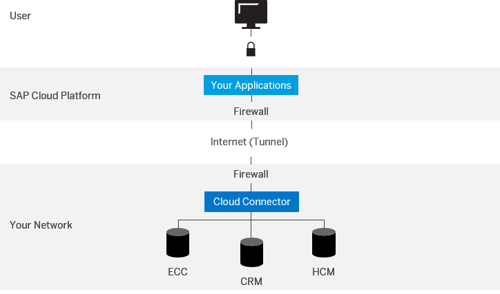

Introduction
The Cloud connector is an on-premise agent that runs in the customer network and takes care of securely connecting cloud applications, running on SAP Cloud Platform, with services and systems of the customer network. It is used to implement hybrid scenarios, in which cloud applications require point-to-point integration with existing services or applications in the customer network. The following diagram shows a high-level picture of the landscape:

This document provides a guide for IT administrators how to setup, configure, securely operate and protect the Cloud connector, version 2.x, in productive scenarios.
This Operator’s guide is structured as follows:
- System requirements for the Cloud connector
This section provides an overview on the minimal and recommended system requirements needed to install and run the Cloud connector.
- Installation, upgrade, and uninstallation of the Cloud connector
(on Windows or Linux operating systems)
This section describes the lifecycle management operations of the Cloud connector, i.e. how to install, upgrade and uninstall it, as well as how to start the Cloud connector process after installation.
- High Availability
This section provides information on how to install a shadow instance, which needs to be reachable in case the master instance of the Cloud connector goes down.
- Administration and configuration of the Cloud connector
This section provides an overview on how to administrate and configure the Cloud connector and how to securely operate it. For example: how to configure on-premise resources which shall be accessible to the related cloud account; how to configure trust between the Cloud connector and an on-premise system; how to configure named administrator users for the Cloud connector administration; and so on.
- Guidelines for secure operation of the Cloud connector
This section summarizes briefly all guidelines and recommendations for a secure setup of the Cloud connector as they are relevant for productive scenarios. It also provides references to the single sections of this operator’s guide where the related topics are described in more detail.
- Monitoring
This section provides an overview on how to monitor the Cloud connector-based connectivity to the cloud, and describes high-availability features of the Cloud connector.
- Supportability
This section provides an overview on supportability in case of issues with the Cloud connector.
- Maintenance and release strategy
This section describes the maintenance and release strategy of the Cloud connector, how new patches or new versions are released, and where to find information about new releases.
- Process guidelines for hybrid scenarios
This section provides process guidelines which help to manage and operate hybrid scenarios.
System administrators, IT administrators, cloud account administrators
This document focuses on the operation aspects of the Cloud connector. It does not cover a general overview of the SAP Cloud Platform and its connectivity service, neither does it address development related questions, such as how to implement connectivity-enabled applications.
For additional information on specific topics, see the following online resources:
| Resource | Link |
|---|---|
| SAP Cloud Platform documentation | https://help.hana.ondemand.com/ |
| SAP Cloud Platform Connectivity documentation | https://help.hana.ondemand.com/help/frameset.htm?e54cc8fbbb571014beb5caaf6aa31280.html |
| SAP HANA Cloud connector documentation | https://help.hana.ondemand.com/help/frameset.htm?e6c7616abb5710148cfcf3e75d96d596.html |
| SAP Cloud Platform Release Notes | http://scn.sap.com/docs/DOC-28833
|
| SAP Community Network | http://scn.sap.com/community/developer-center/cloud-platform |
| SAP security | https://service.sap.com/security
|
| SAP security guides, network security | https://service.sap.com/securityguide |
| SAP Cloud Platform openSAP course |
https://open.sap.com/course/hanacloud1 Videos of openSAP course
"Introduction to SAP Cloud Platform" |
| Registration for free SAP Cloud Platform account | https://account.hanatrial.ondemand.com/ |